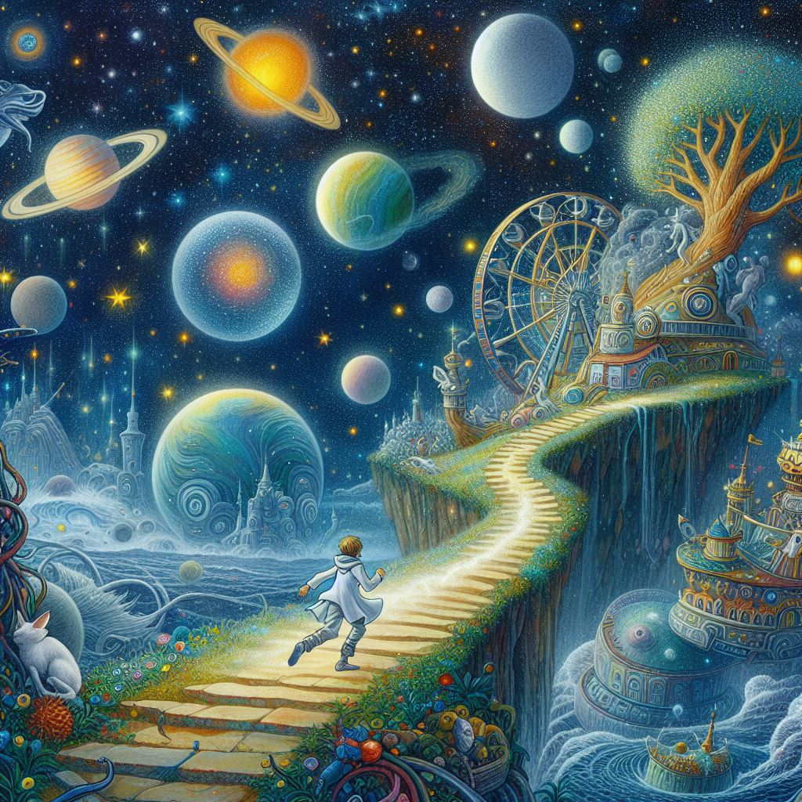

Запощено Автором сайта
Пост сделан 10 Февраля 2024 года 18:08 МСК
Давным-давно, когда люди еще не знали, что есть за пределами Земли, жил один мальчик, который очень любил смотреть на звезды. Он мечтал узнать, что скрывается за ними, и посетить другие планеты и солнечные системы. Он читал все книги про космос, которые мог найти, и строил свои модели ракет и спутников. Однажды он увидел в небе странную вспышку, и решил пойти посмотреть, что это. Он взял с собой свой рюкзак, фонарик и бинокль, и пошел к лесу, откуда шел свет. Там он нашел большой металлический корабль, который был похож на тарелку. Из корабля вышли два существа, которые были похожи на людей, но имели зеленую кожу, большие глаза и уши. Они говорили на непонятном языке и держали в руках какие-то приборы. Мальчик спрятался за деревом и стал наблюдать за ними. Он понял, что они прилетели с другой планеты, и были здесь в качестве исследователей. Он захотел познакомиться с ними и узнать больше о их мире, но боялся, что они могут быть опасными или враждебными. Он решил подождать, пока они уйдут, и посмотреть, что они оставили в корабле. Он подкрался к тарелке и открыл дверь. Внутри он увидел много разных кнопок, рычагов, экранов и индикаторов. Он почувствовал себя, как в научно-фантастическом фильме, и решил попробовать что-то нажать. Он наугад нажал на одну из кнопок, и тут же корабль завибрировал и взлетел в воздух. Мальчик испугался и попытался найти способ остановить его, но было уже поздно. Корабль вышел в космос и ускорился до сверхзвуковой скорости. Мальчик увидел, как Земля уменьшалась в иллюминаторе, и понял, что он улетел с нее навсегда. Он заплакал и стал звать на помощь, но никто не отвечал. Он подумал, что он умрет в космосе, один и забытый. Но тут он заметил, что на одном из экранов появилась карта галактики, на которой были отмечены разные точки. Он понял, что это были координаты других планет, которые посетили зеленые пришельцы. Он подумал, что может быть, он сможет найти на них друзей или помощь. Он решил выбрать одну из точек и нажал на нее. Корабль изменил курс и полетел к ней. Мальчик не знал, что его ждет там, но он решил не сдаваться и искать приключения. Он подумал, что это будет самое большое путешествие в его жизни, и он увидит то, о чем мечтал. И так он стал путешественником по галактикам, который каждый день открывал для себя новые миры, существа и чудеса. Он научился общаться с разными расами, узнал много интересных фактов и историй, и нашел много друзей. Он никогда не забывал о Земле, но он не жалел о своем выборе. Он был счастлив, потому что он делал то, что любил, и жил по своим правилам.
Вернуться на главную